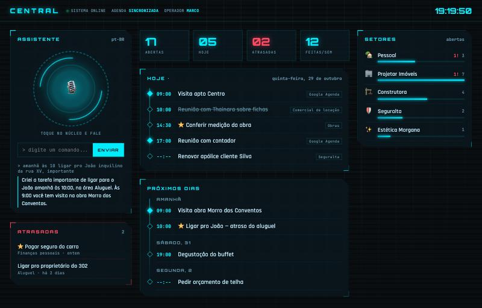
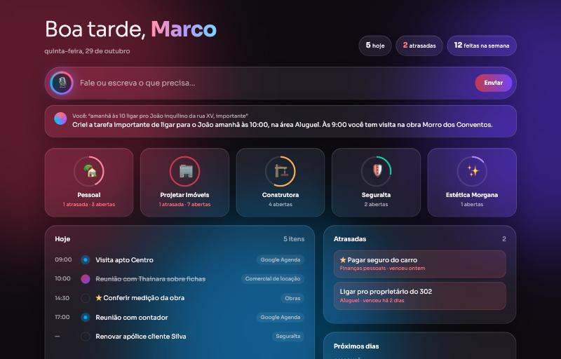
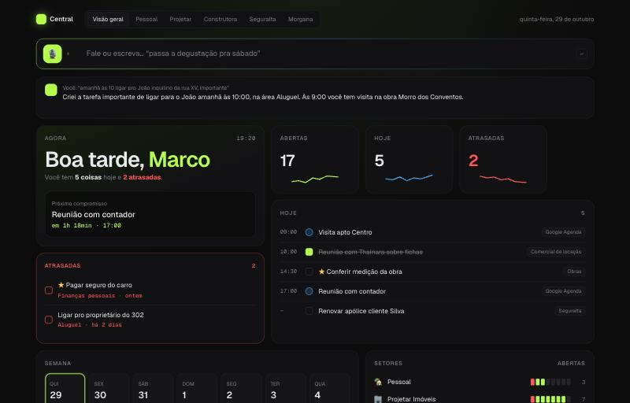

Central · 3 opções de visual
Dados de exemplo. Toque para abrir cada uma.

1 · JarvisPainel de nave, ciano brilhante, núcleo de voz
2 · VidroVidro fosco sobre luzes coloridas, estilo Apple
3 · BentoBlocos limpos, preto com verde-limão